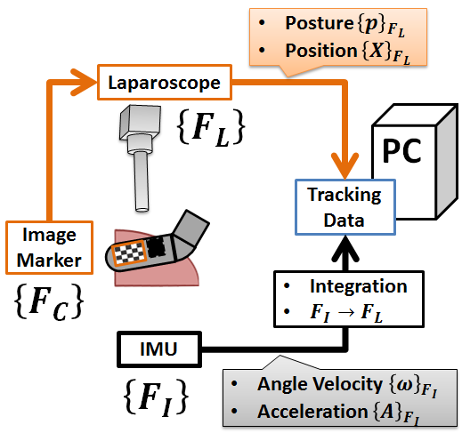

|
画像マーカと慣性センサを用いた術具トラッキングシステムの開発 腹腔鏡下手術とは低侵襲治療の一種であり，腹部に開けられた小さな穴から挿入された専用の術具によって実現される．開腹手術と比較した際の腹腔鏡下手術の利点としては，回復が早いこと，創痛が少ないこと，二次感染の危険性が低いことなどが挙げられる．このように，腹腔鏡下手術によって得られる患者側の便宜は大きい．一方腹腔鏡下手術では限られた視野で術野全体を把握せねばならず，また開腹手術とは異なり触診が困難であるため，医師にとっての負担は大きい． そのため，腹腔鏡下手術における超音波プローブの役割は大きい．超音波プローブを用いることで，医師は腫瘍の局在や周辺部の血管の走行のリアルタイムな情報を得ることが出来る．特に易出血性臓器である肝臓の切除術では，超音波プローブは医師にとって不可欠な術具とされている．しかし，腹腔鏡下肝切除術で超音波プローブを使用した場合，医師は腹腔鏡画像と超音波装置の二画面を同時に確認せねばならない．加えて超音波プローブからは二次元の患部情報しか取得することが出来ないため，医師は二次元画像を基に肝内の三次元構造を頭の中で再構築しながら手術を進める必要がある．そこで，我々は医師に対し，より直感的な肝内構造の情報を提供する手術ナビゲーションシステムを提案する．これは，超音波プローブから得られた二次元の腫瘍情報を繰り返しオーバーレイすることで，腹腔鏡画像上に三次元の腫瘍情報を提示することができる(Fig.1)．
Fig.1 我々の提案する二次元超音波画像を用いた手術ナビゲーションシステム 手術ナビゲーションシステムとは三次元の術野情報を医師に提供する医療機器を指す．従来の手術ナビゲーションシステムは，術前診断によって得られたX線CT画像やMR画像を使用している．そのため，従来のシステムでは術中に生じる臓器変形への対応が困難である．それに対し，我々のシステムは術中診断画像を使用しているため，臓器変形への対応が容易である． このシステムを実現するためには超音波プローブの位置と姿勢を把握する必要がある．そのため，術具トラッキングシステムは手術ナビゲーションシステムにとって必要不可欠な医療機器となっている．現在研究されている手術ナビゲーションシステムでは，光学式トラッキングシステム(Optical Tracking System :OTS)や磁気式トラッキングシステム(ElectromagneticTracking System :ETS)が使用されている．OTSは非常に精度の高い計測が可能であるため，多くの手術ナビゲーションシステムで使用されている．しかし，カメラとマーカの間に遮蔽物が存在すると計測出来なくなる．ETSは遮蔽物の有無に関わらず計測することが出来るが，周辺機器や金属の発する磁場の影響により精度が低下する．更に，これらのシステムは付属計器が高価かつ空間的に大きな割合を占めるため，実際の手術現場への導入が困難である．そこで，腹腔鏡画像に対し，画像処理を施すことで術具をトラッキングすることを考える．すると手術機器を計器として使用することが可能であるため，従来のトラッキングシステムとは異なり，容易に手術現場に導入することが可能である．しかし，腹腔鏡画像処理(Laparoscopic Image Processing :LIP)はOTS同様に遮蔽物に対し脆弱であり，また腹腔鏡から発せられる光源の照り返しによって計測が不安定になるという欠点がある．  Fig.2 開発したシステムの概要 以上の背景から，我々は内視鏡画像処理の慣性センサユニット(InertialMeasurement Unit : IMU)に対し，SensorFusionを施した新しい手術トラッキングシステムを開発し，その精度評価を行った．IMUはLIPとは異なり，外環境に依存しないロバストな計測を行うことが可能である．従って，IMUを用いることでLIPのデータ間を補間することが可能である．一方，IMUの出力値は角速度や加速度といった変化量であるため，IMU単体でトラッキングを行った場合，計測誤差が蓄積される．しかし，LIPは腹腔鏡座標における相対的な位置と姿勢を計測することが可能であるため，その誤差を補正することができる．我々の提案するトラッキングシステムでは，LIPの追従対象となるマーカとIMUが超音波プローブの上に実装されている(Fig.2)．LIPは腹腔鏡座標系におけるマーカの位置と姿勢が出力される．IMUには三軸ジャイロスコープと三軸加速度センサが実装されている．従ってIMUからはIMU座標系における角速度と加速度が出力される．そのため，これら二つの計測系に対してSensorFusionを施す際は，IMUの出力値に対して積分処理，及びからへの座標変換を施す必要がある．また，本研究ではSensorFusionを施す際は拡張カルマンフィルタ，及びノイズの大きい加速度センサに対しバンドパスフィルタを実装した． 参考文献
|

|
» TOP » 研究内容 » 新しい手術支援システムの実用化と評価手法の確立
|